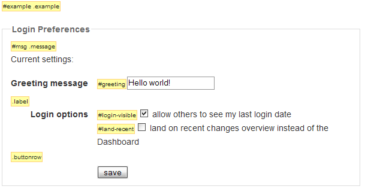

|
Form.Observer :: TimedObserver |
Form observer implements the getValue() method using Form.serialize() on the element from the first argument. See Abstract.TimedObserver for general documentation on timed observers.
Example
In this example an observer is used to change the appearance of the form if any of the values had been changed. It returns to its initial state when the data is submitted (saved).

Here is the complete JavaScript code for the above example:
new Form.Observer('example', 0.3, function(form, value){ $('msg').update('Your preferences have changed. Resubmit to save').style.color = 'red' form.down().setStyle({ background:'lemonchiffon', borderColor:'red' }) })
$('example').onsubmit = function() { $('msg').update('Preferences saved!').style.color = 'green' this.down().setStyle({ background:null, borderColor:null }) return false }
|
Prototype API 1.5.0 - prototypejs.org